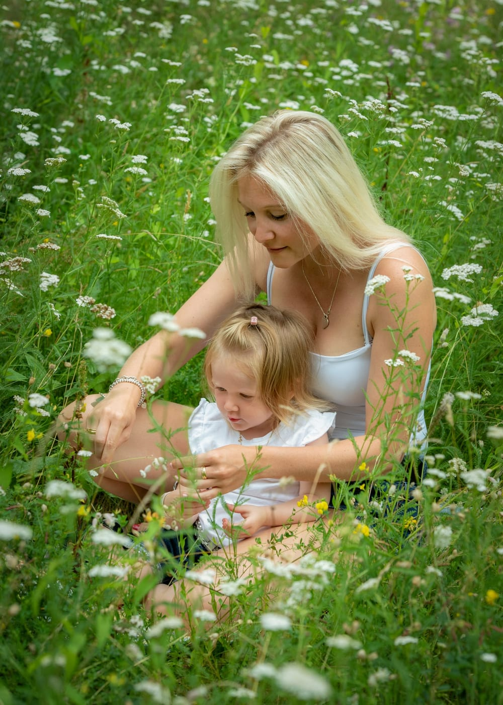
Fotostudio Fotoprofile in Neufahrn bei Freising
Menschen vor
meiner Kamera
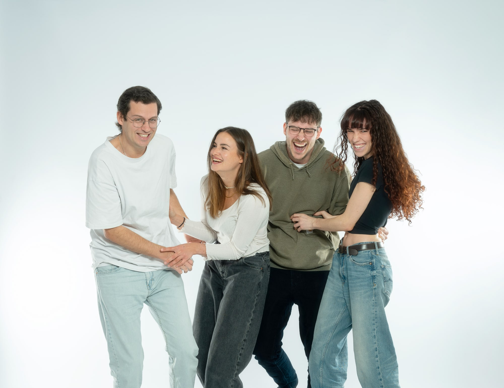
Porträts für Familien, Paare und Menschen mit Hund. Business-, Bewerbungs- und Passfotos.
Meine Arbeit
Ich fotografiere seit über 35 Jahren und habe ein feines Gespür für Menschen und ihre Vierbeiner entwickelt. In kürzester Zeit erkenne ich, was Sie gerade brauchen: Bei Kindern, ob sie Action oder Ruhe möchten, im Business-Bereich, ob Sie Anleitung, eine klare Position oder einfach Zeit zum Ankommen brauchen.
Jeder tickt vor der Kamera anders, und genau darauf stelle ich mich mit Empathie, Feingefühl und Herz ein. So fühlen Sie sich wohl, die Bilder zeigen Sie, wie Sie wirklich sind, und am Ende sagen Sie: „Das hat sogar richtig Spaß gemacht.“
Fotoshootings
Baby- & Kinderfotos
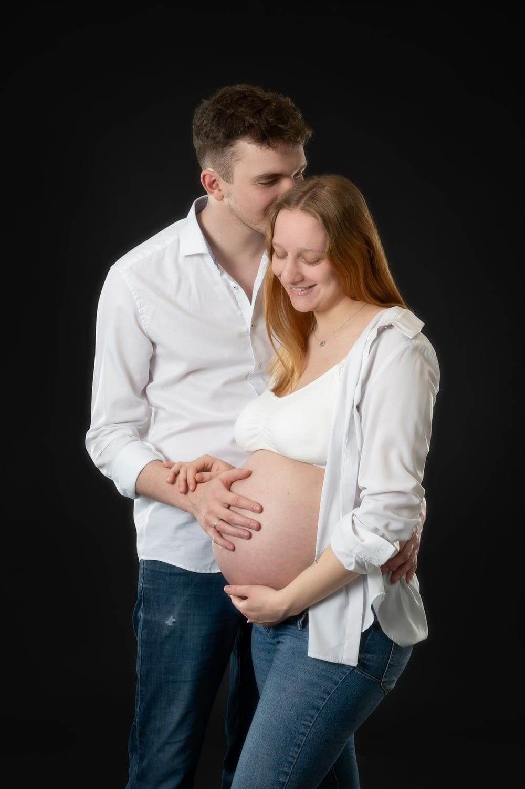
Babybauch-Shooting
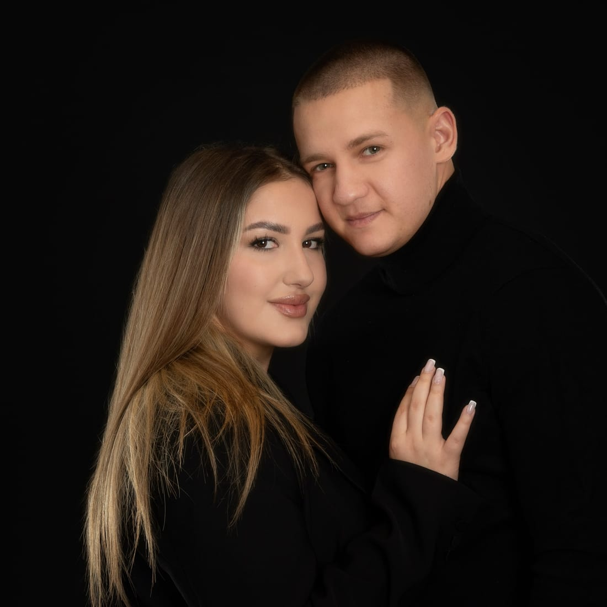
Portrait & Paare
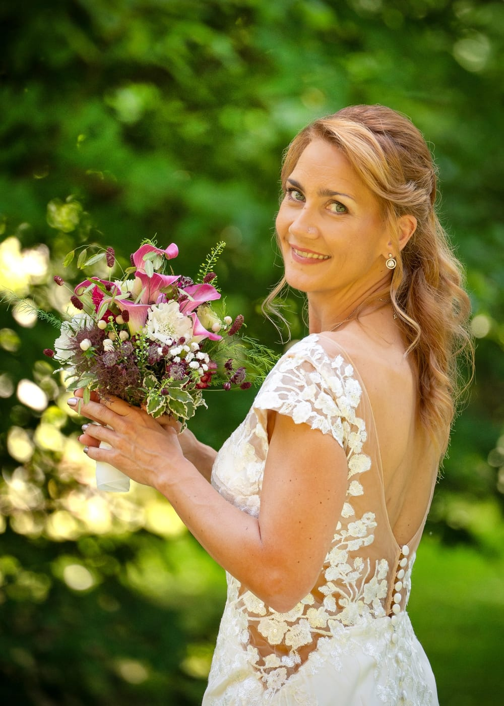
Hochzeit
Boudoir-Shooting
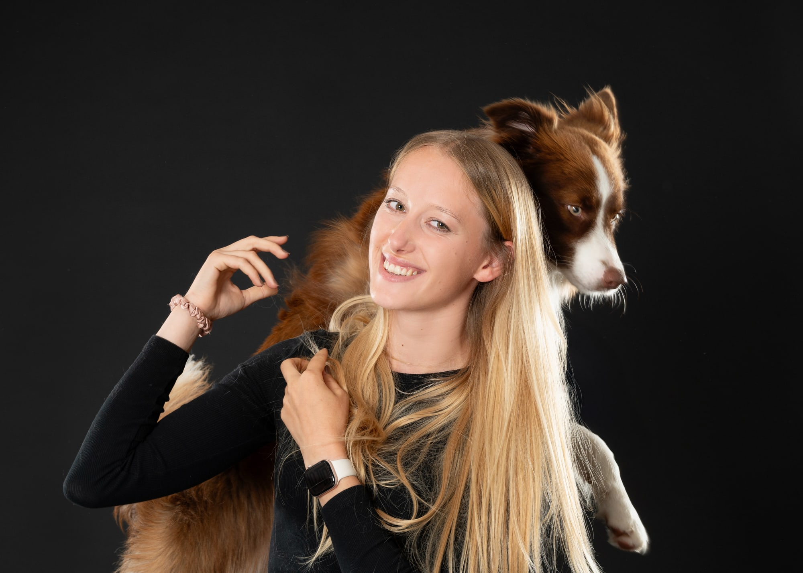
Hund & Mensch
Businessfotos
Bewerbungsfotos
Passfotos & Bewerbungsfotos
Passfotos
ab 25 €Termin buchen
Bewerbungsfotos
ab 45 €Termin buchen
Portfolio
Zum Portfolio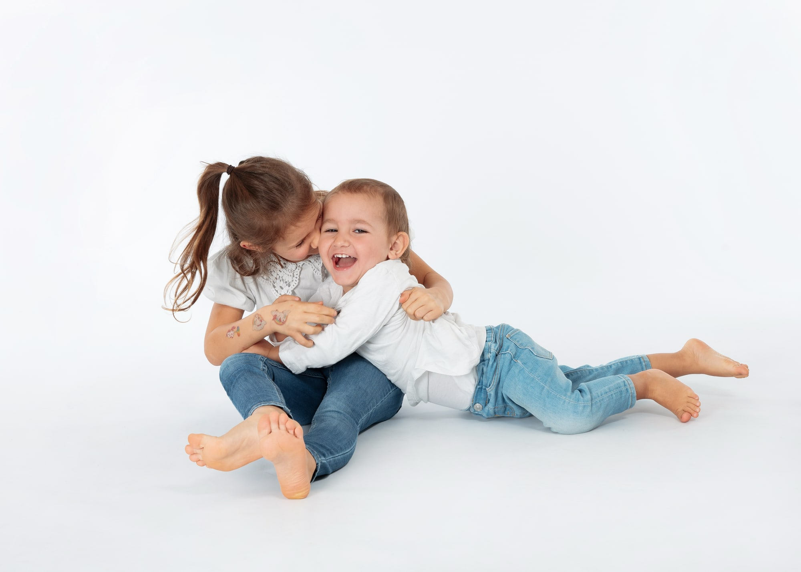
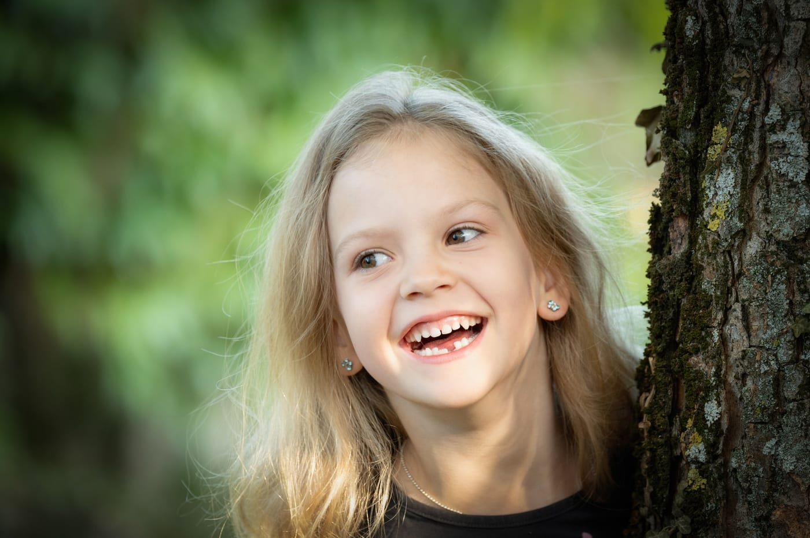
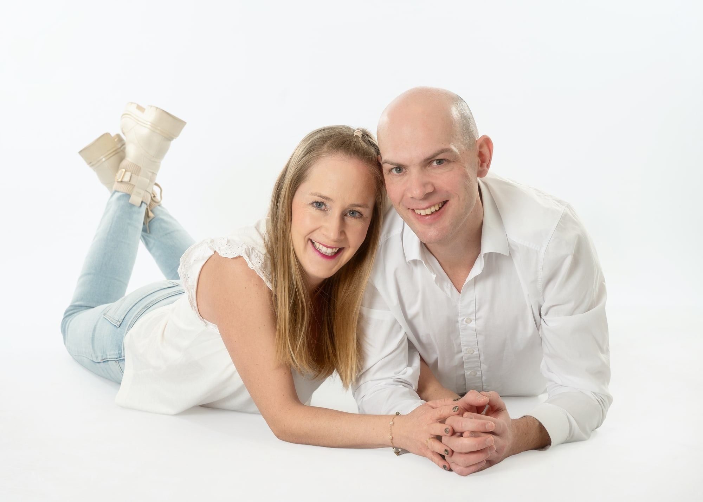


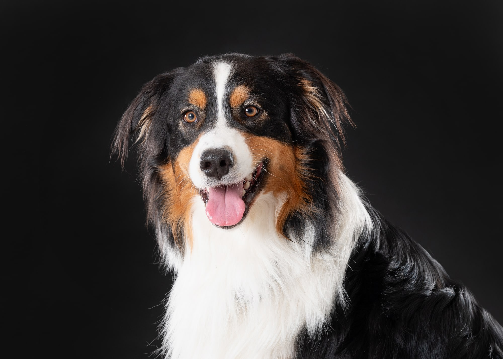
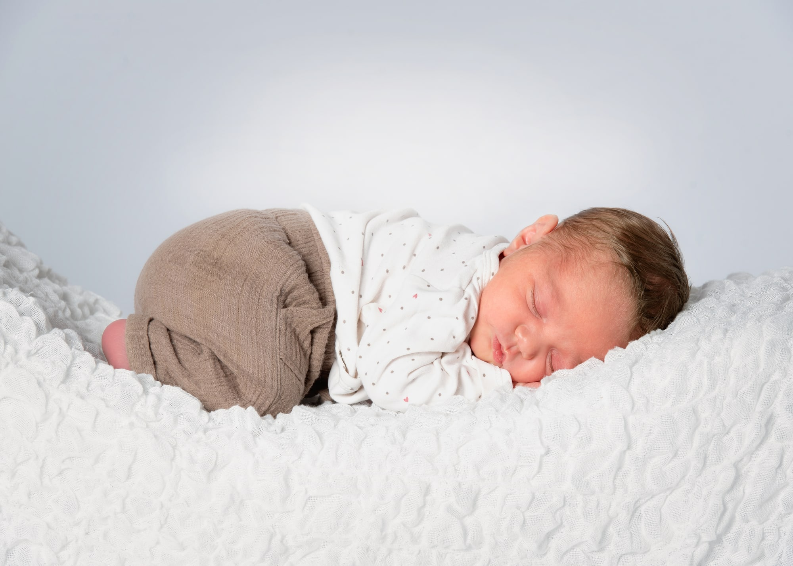
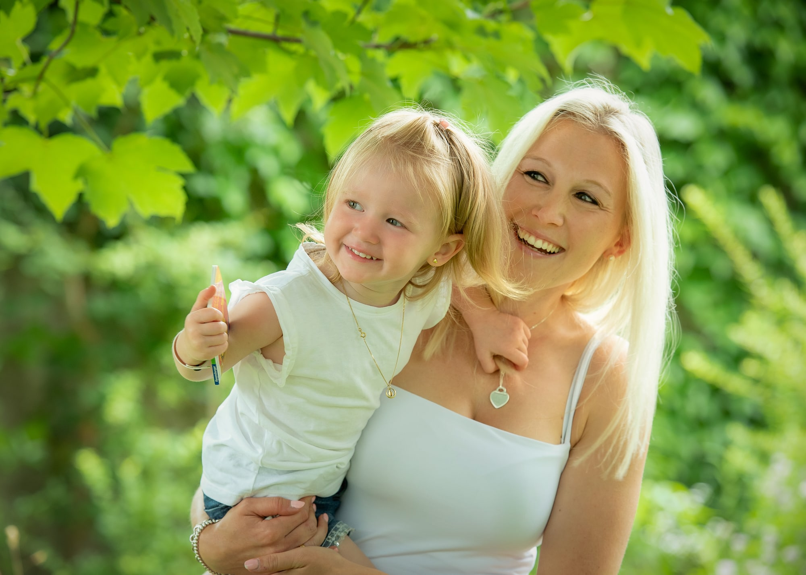
Katrin Bernhard
Fotografenmeisterin
Viele, die sich sonst nicht gern fotografieren lassen, sind am Ende überrascht, wie schön ihre Bilder geworden sind. Viele Familien begleite ich seit Jahren, vom Babybauch über die Einschulung bis zur Hochzeit.
Über michBewertungen
233 Google-Bewertungen · Stand: November 2026
Studio, Anfahrt, Einsatzgebiet
Bahnhofstraße 30
85375 Neufahrn bei Freising Route planen
85375 Neufahrn bei Freising Route planen
Einsatzgebiet: Landkreis Freising, Landkreis Erding und Landkreis München. Außerdem: Eching, Hallbergmoos, Freising, Garching, München, Moosburg und Mainburg.
Ihr Termin im Studio
Termine nach Vereinbarung